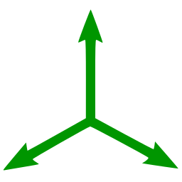

Mechanics
Orientation, position, and pose conversions. Co-ordinate transformations.
Vision
Voxel grids, rendering, optical flow, depth triangulation, signed distance functions and more.
Robot
Gradient-based motion planning for mobile robots and manipulators, using splines.
Gym
Differentiable RL gym environments, solvable via trajectory optimization.